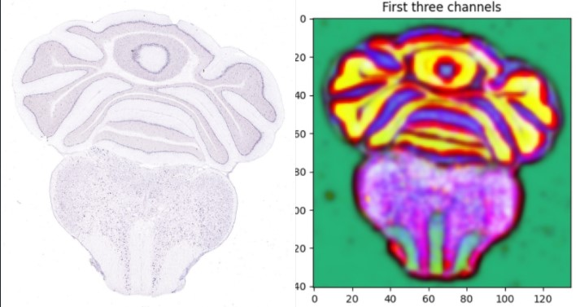

Research Assistant on Data and IT Pytorch|Medical Imaging|Computer Vision 06/2020 - 08/2020
Employer: UCLA BIG Summer with Prof. Daniel Tward
What I do:
- Developed an algorithm to build a “brain atlas” - a reference neuroimage - to quantify cell distribution patterns in brain
- Created a PyPI package and Python modules with new scatter transform methods using convolution networks and gaussian downsample
- Performed 2D and 3D image registration that combine multiple high-resolution images with deformations
- 87% accuracy in alignment prediction using machine learning techniques like Linear Discriminant Analysis and Random Forest 